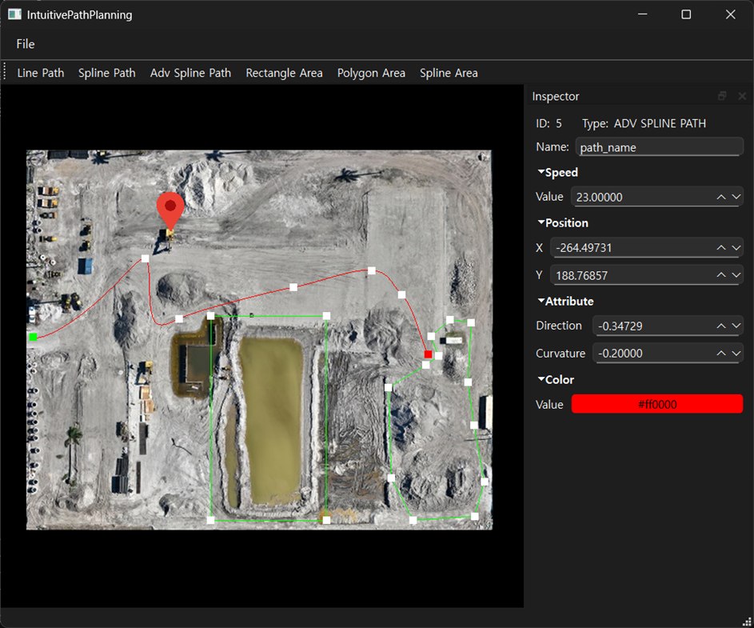
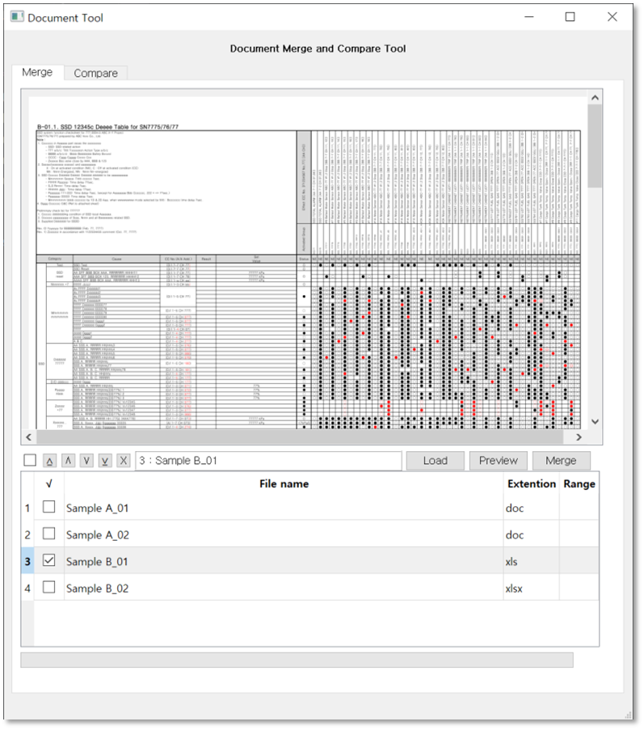
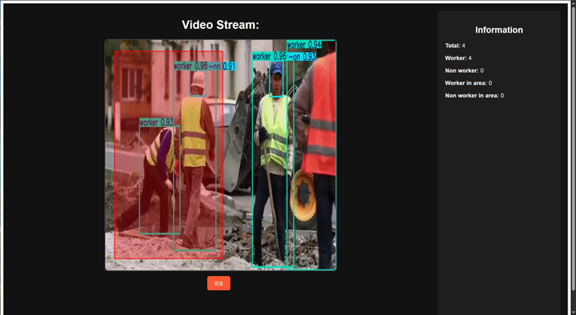
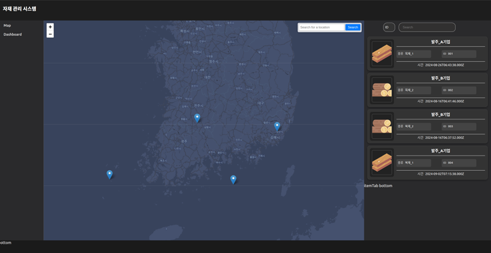
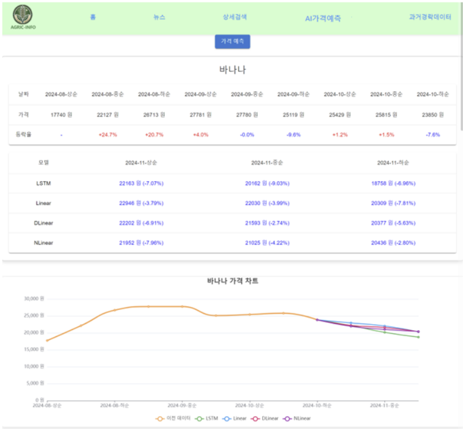
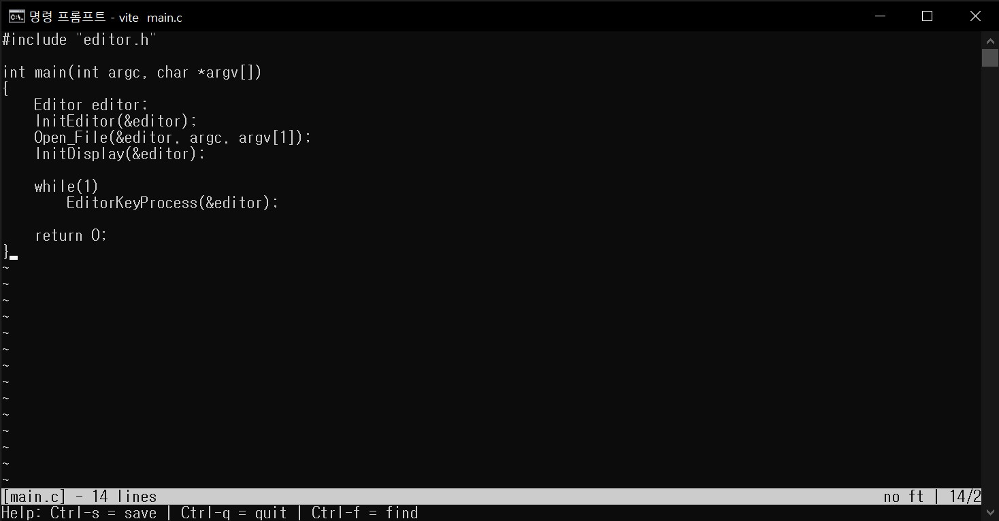
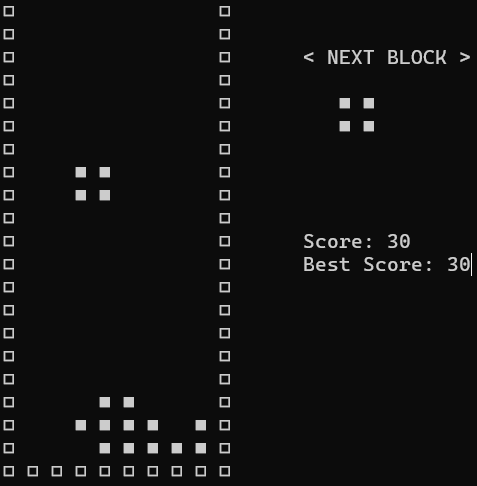
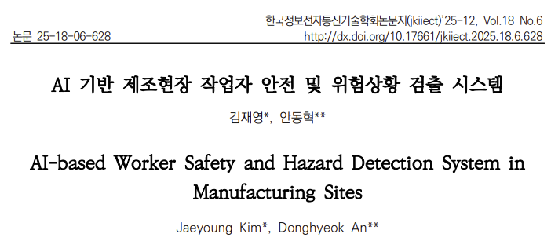
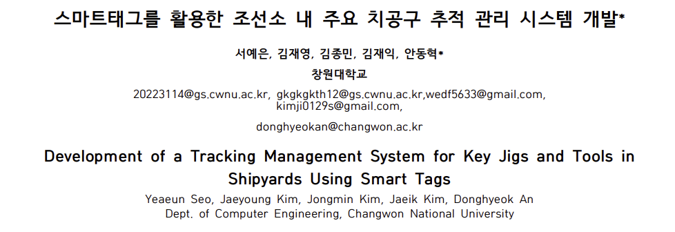
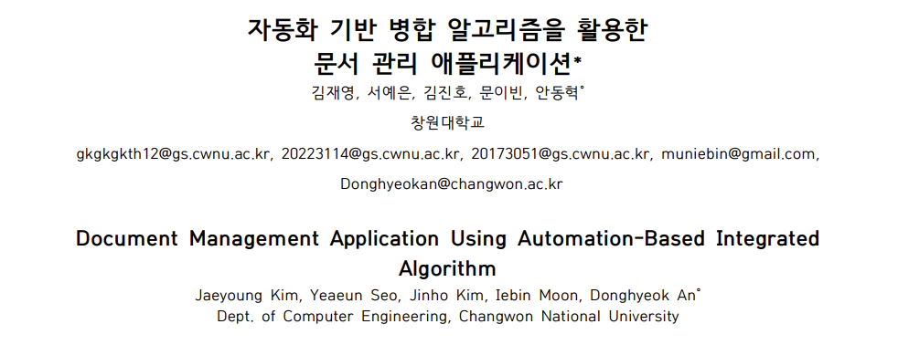

안녕하세요,
김재영입니다.
프로젝트 보기
About Me
저는 다양한 경험이 강점인 개발자입니다. AI, 알고리즘, 서버, GUI, 여러 통신 프로토콜까지 아우르는 실무형 프로젝트를 수행하며 설계부터 구현까지 전 과정을 주도적으로 개발한 경험이 있습니다.
자원을 최대한 효율적으로 사용하는 것을 중요하게 여기며 제한된 환경에서도 안정적으로 동작하는 시스템을 만드는 개발자로 성장하고 있습니다.
Education & Experience
컴퓨터공학과 학사 졸업
창원대학교
학점: 3.88/4.5
Projects

무인 장비 경로 계획 프로그램
고정밀 지도 상에 무인 장비의 이동 경로와 작업 영역을 생성하여 해당 정보를 UTM 좌표로 출력하는 프로그램. 특정 위치에서 헤딩 앵글 및 곡률값을 제약하는 보간 알고리즘 개발. 작업 영역 내부 판단 기능 개발.

문서 병합 및 비교 프로그램
워드, 엑셀, PDF 파일을 하나의 파일로 병합하며 문서간 레이아웃을 고려한 페이지 단위 비교가 가능한 프로그램. 병합 시 자동 표지 페이지, 목차 페이지 생성 및 페이지 번호 기입 기능 개발. 병합 결과 미리 보기 기능 개발.

AI 기반 제조현장 작업자 안전 및 위험상황 검출 시스템
YOLOv8 모델을 활용하여 제조 현장에서 작업자와 비작업자를 구분하고 안전모 착용 여부를 실시간으로 탐지. 사용자가 설정한 위험 구역 내 비작업자 진입 시 즉각적인 경고를 통해 안전 사고를 예방하는 시스템.

스마트태그를 활용한 조선소 내 주요 치공구 추적 관리 시스템 개발
조선소 내 치공구의 효율적인 관리를 위해 GPS와 LTE 통신을 활용한 위치 추적 시스템. Raspberry Pi와 Sixfab LTE 모듈을 이용해 하드웨어를 구성하고, 웹 기반의 실시간 위치 관제 및 재고 관리 기능 개발. 웹 대시보드를 통해 GPS 별 위치 전송 주기 설정 기능 개발.

AgricInfo: 농산물 정보 전달 및 가격 예측 웹사이트
농산물 관련 뉴스, 품목 별 실시간 가격 변동 추이 및 가격 예측 서비스를 제공하는 웹사이트. 농산물 데이터 수집 및 전처리 후 시계열 딥러닝 모델인 LSTM, Linear, DLinear, NLinear를 학습. 각 모델별 가격 예측 정보를 제공.


Awards
2024 한국컴퓨터종합학술대회 학부생/주니어 논문경진대회
학부생부문 장려상
한국정보과학회
2024학년도 캡스톤디자인 경진대회
우수상
국립창원대학교산학협력선도대학육성사업단
2024 한국소프트웨어종합학술대회 학부생/주니어 논문경진대회
학부생부문 장려상
한국정보과학회
Certifications
정보처리기사
한국산업인력공단
2025.12
운전면허 1종 보통
경찰청(운전면허시험관리단)
2020.01
Papers

AI 기반 제조현장 작업자 안전 및 위험상황 검출 시스템
객체 검출 모델을 활용하여 제조 현장에서 작업자와 비작업자를 구분하고 안전모 착용 여부를 실시간으로 탐지. YOLOv8과 YOLO-NAS 모델 학습 후 정확도 및 추론 속도 비교. 위험 구역 내 비작업자 진입 시 즉각적인 경고를 통해 안전 사고를 예방하는 시스템 구축.

스마트태그를 활용한 조선소 내 주요 치공구 추적 관리 시스템 개발
조선소 내 치공구의 효율적인 관리를 위해 GPS와 LTE 통신을 활용한 위치 추적 시스템. Raspberry Pi와 Sixfab LTE 모듈을 이용해 하드웨어를 구성하고, 웹 기반의 실시간 위치 관제 및 재고 관리 기능 개발. 웹 대시보드를 통해 GPS 별 위치 전송 주기 설정 기능 개발.

자동화 기반 병합 알고리즘을 활용한 문서 관리 애플리케이션
OOXML(Office Open XML) 기반의 문서 구조를 분석하여, MS Word 및 Excel 문서의 병합을 자동화하는 애플리케이션 개발. 기존 수작업 병합의 비효율성을 개선하고, 스타일 및 서식 보존을 통해 문서 관리의 효율성을 증대.